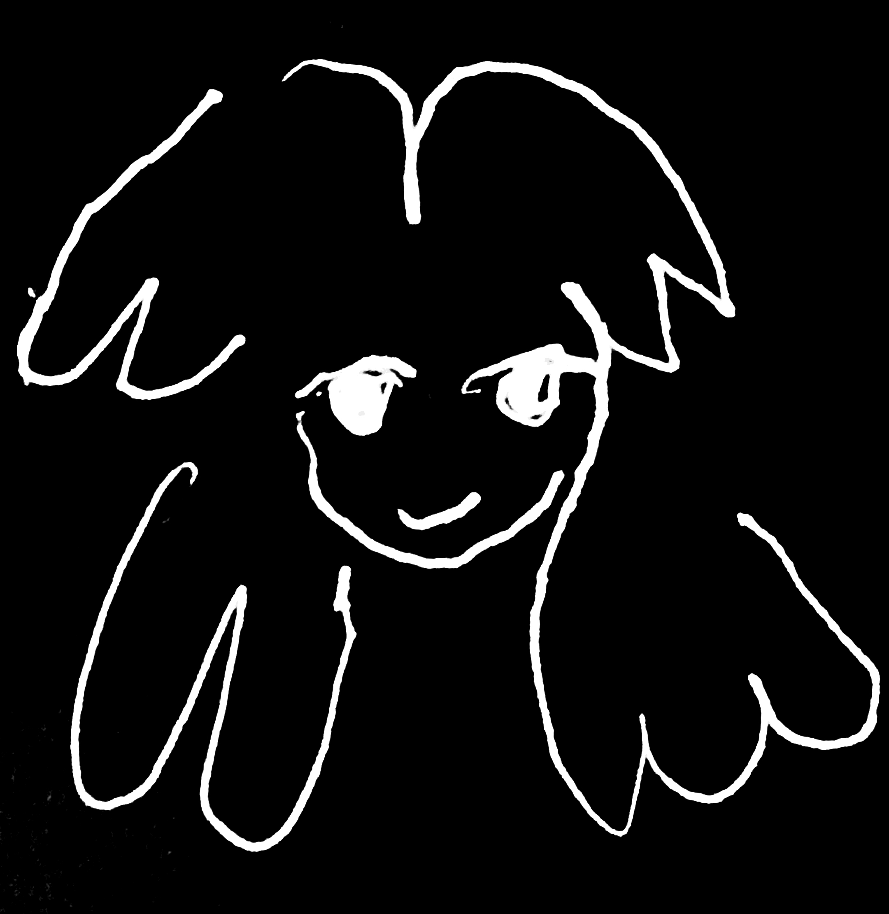

Bio
I am a Ukrainian digital artist and creative technologist based in Prague, Czech Republic. My practice focuses on interactive installations, audiovisual performances, real-time visuals, and XR. I work with 3D scanning, particle simulations, sensor-based input, and motion tracking to create visual systems that respond to sound, movement, and audience interaction. My work takes the form of interactive installations, projections, VR experiences, and experimental web-based projects.
I graduated with BA in Fine Art, Experimental Media, from Teesside University, studied through Prague City University.
My current practice explores digital archives as a way of documenting, transforming, and reinterpreting objects, spaces, and cultural memory.
Artist Statement
My work focuses on memory, space, and time. I 3D scan places and objects, and use them as base materials for further artistic exploration. I am interested in how 3D mediums can be explored as a form of documentation and artistic expression.
For me, 3D is a medium that captures space or objects at a specific time. It becomes similar to keeping a visual diary, which allows me to reinterpret places, moments and memories through their digital reproductions. The process of digitalising material objects creates errors, distortions, and data loss, which is an inherent part of the medium that defines the style and concept of the work.
My practice also includes research-based projects, where I use 3D scans as a tool for cultural preservation. In particular, focusing on Ukrainian contemporary culture, which is especially relevant during an ongoing full scale invasion. By amplifying the distorted look of 3D scans I try to highlight the instability of cultural memory that is under threat.
Despite the disparity of mediums that I work with, they all intersect in their digital nature, and are later transformed into different mediums such as: images, videos, interactive installation, audio visual performances, and websites. The medium determines how the viewer experiences and interacts with the artwork.